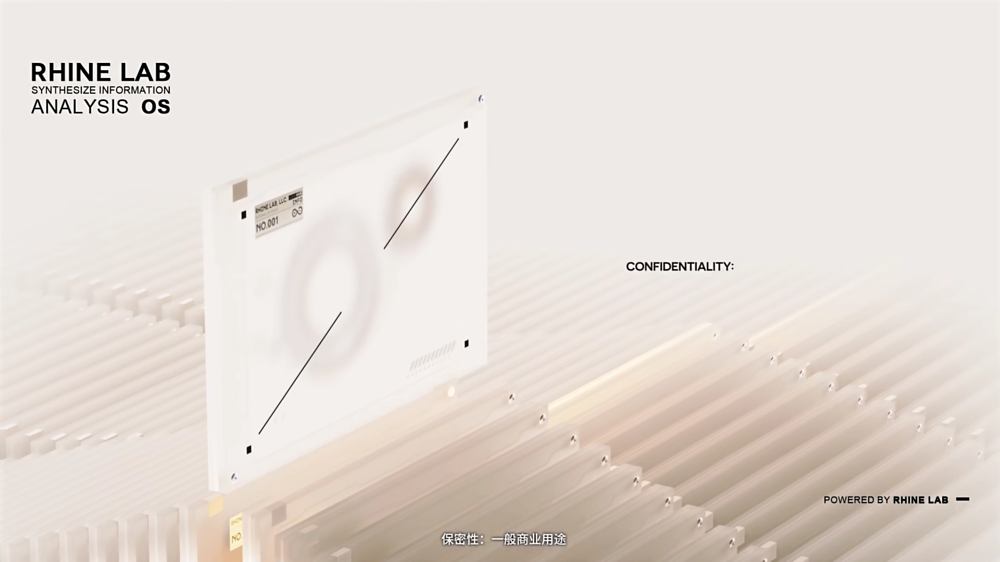

BSN
BUSINESS SECTION
业务科字标旁的橙色空心构件是原片焦点。网页点选移动同一个节点；移动、选中和说明为本地转译。
RHINE LAB 官方影像的网页转译 / 教学改编
来源与边界 ↗
正在准备当前片段
OBSERVATION 01 / 05
源片先以大量平行立体档案覆盖视野，再抬出一件X-001；不是平面作品卡片行。这里五个按钮是本地教学目录，不代表原片有五个可点击档案。
ORGANIZATION / 原作 59.60—73.40
源片的字标包含莱茵环形连字、不同黑白表面、透视倾斜与尺度差。上方机构场景保留这些像素，下列按钮提供等价的可读入口。
BSN
业务科字标旁的橙色空心构件是原片焦点。网页点选移动同一个节点；移动、选中和说明为本地转译。
PRIMARY SOURCES / TRANSFER SCOPE
官方影像的网页转译／教学改编。本轮未确认可直接对照的官方莱茵品牌网站；材质、字标和镜头属于原作，网页状态属于本库。
 2022 / 明日方舟官方账号
2022 / 明日方舟官方账号主视觉来源。四段无声片段保留1920×1080、25fps和原始1倍速度；不是重新绘制的3D系统。
 2023 / 四周年真实网页
2023 / 四周年真实网页辅助比较来源，不作为档案阵列或科室点击的证据。
EXTERNAL CODE / LBEILC
LBEILC 制作的非官方“莱茵生命：访问”终端复刻，以 TypeScript、Three.js 和 Vite 实现 DOM／SVG 开场、循环档案阵列、玻璃与正文解密，以及模型旋转、拆解和重组。检索、收藏等功能为开发者扩展。
本案例提供源码入口与说明，不在站内加载其三维工程，也不收录其整套模型、字体和音频。本次核验了源码与依赖，未运行完整项目或测量性能。
原创代码 MIT © 2026 LBEILC；游戏名称、标志、原作素材与第三方字体仍按各自权利处理。
默认以35秒档案原帧进入；播放按钮启动对应原作片段。连续场景只连接本次选取的四段，略过原片其他镜头。固定米白主题，所有本地片段无音轨；完整声音与影片在官方播放器中。原作名称、媒体及图形权利归原权利人。